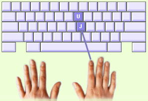

Jede Taste wird durch den Finger der Grundreihe geschrieben, der ihr am nächsten ist. Nachdem Sie eine Taste angeschlagen haben, kehrt der Finger wieder auf seine Taste in der Grundreihe zurück.
Beispiel: Der Buchstabe U
1. Ihre Finger liegen auf der Grundreihe.
2. Ihr rechter Zeigefinger bewegt sich vom J nach oben zum U. Heben Sie dabei Ihre Hand etwas hoch, um leichter an das U zu kommen.
3. Schreiben Sie das U mit einem schnellen und leichten Druck.
4. Am Schluss geht der Zeigefinger wieder zurück zum J.
Die Leertaste |
 |